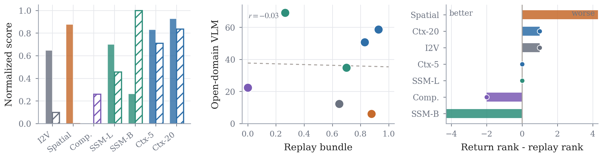

Context
Raw recent frames at K = 1, 5, or 20 chunks — tests whether longer windows alone stop drift.
When the camera leaves and returns, which memory keeps the same world instead of a plausible but different scene?
Controlled memory ablations on a shared Wan action-to-video stack — reproducible rows, evaluation scripts, and qualitative revisit panels.
01 · Overview
Echo-Memory holds the video backbone, training recipe, and data protocol fixed, and swaps only the memory module. The goal is to separate replay fidelity from return memory when the camera leaves and comes back to the same place.

02 · Memory Design
All variants plug into the same write–read interface; we only change what is stored and how history is retrieved. A no-memory I2V floor re-generates from the first frame as a lower bound.
Raw recent frames at K = 1, 5, or 20 chunks — tests whether longer windows alone stop drift.
Learned compact tokens at ratio r = 4 — history without growing raw-frame storage.
Explicit spatial read/write state — targets layout, object pose, and viewpoint carry.
Block-wise SSM updates — recurrent carry beyond short context windows on revisit.

03 · Checkpoints
Wan 2.1 1.3B memory rows — epoch-0, 30,000 steps, static in-domain pool. Released weights: Echo-Team/Echo-Memory
| Family | Paper row | HF path | Steps |
|---|---|---|---|
| Raw context | Context K=1 | context_k1/epoch-0.safetensors | 30,000 |
| Raw context | Context K=20 | TODO | TODO |
| Spatial | Spatial Memory | TODO | TODO |
| State-space | Block-wise SSM | TODO | TODO |
| State-space | Legacy Hybrid | TODO | TODO |
| Spatial | concat text (abl.) | TODO | TODO |
| Spatial | inject none (abl.) | TODO | TODO |
| Spatial | cross-attn t32 (abl.) | TODO | TODO |
| State-space | SSM ctx1/e4/h21 | TODO | TODO |
| State-space | SSM ctx5/e1/h21 | TODO | TODO |
| State-space | SSM ctx5/e4/h81 | TODO | TODO |
Download
huggingface-cli download Echo-Team/Echo-Memory context_k1/epoch-0.safetensors --local-dir ./ckptsIn-domain eval (Echo-Memory repo)
export WAN_BASE_MODEL=/path/to/Wan2.1-T2V-1.3B
export DATASET_BASE_PATH=data/Context-as-Memory-Dataset
export CKPT=./ckpts/context_k1/epoch-0.safetensors
bash eval/v2/run_static_consistency_loop_and_revisit.sh
Keep the row folder in CKPT — env/memory_baseline_runtime.py infers memory flags from the path.
Full index:
doc/checkpoints.md.
04 · Evaluation
Each branch asks a different question: Can the model reconstruct the past? Can it close a loop in-domain? After an edited first frame, does it return to the same world?
PSNR, SSIM, LPIPS on chunk-wise reconstruction — measures short-horizon pixel fidelity.
180° trajectory loop closure with VLM-assisted scoring on held layouts.
Edited first frames and 45° return probes — stresses object identity and scene persistence.
Training and inference wrappers are public; the dynamic eval protocol is TODO.

05 · Qualitative Evidence
Qualitative panels follow a simple diagnostic: first frame → leave the view → revisit tail. We compare whether memory restores the same object, pose, background, and camera geometry — not merely a plausible new scene.

Dynamic previews use one randomly selected training scene replayed with the same first frame, prompt, and GT camera trajectory across all six rows.
06 · Main Conclusions
Replay metrics and return probes do not always agree — a model can look sharp on reconstruction yet fail when the camera returns. Rankings reorder once identity under revisit is measured.

07 · News & Roadmap
SpatialVID support added: dynamic training/inference recipes, 5-second first-chunk replay previews, and dynamic eval TODO.
Echo-Memory released: paper, project page, public code, replay/revisit eval assets, and baseline checkpoints.
08 · Citation
Echo-Memory: A Controlled Study of Memory in Action World Models (June 2026). Licensed under CC BY 4.0. Cite the arXiv preprint below.
@article{king2026echomemory,
title={Echo-Memory: A Controlled Study of Memory in Action World Models},
author={King, Wayne and Xue, Zeyue and Bian, Yuxuan and Huang, Jie and Li, Haoran and Li, Yaowei and Su, Yaofeng and Li, Yuming and Wang, Haoyu and Zhang, Shiyi and Zhang, Songchun and Niu, Yuwei and Xu, Sihan and Zhuang, Junhao and Huang, Haoyang and Duan, Nan},
journal={arXiv preprint arXiv:2606.09803},
year={2026},
month={jun},
eprint={2606.09803},
archivePrefix={arXiv},
primaryClass={cs.CV},
url={https://arxiv.org/abs/2606.09803}
}